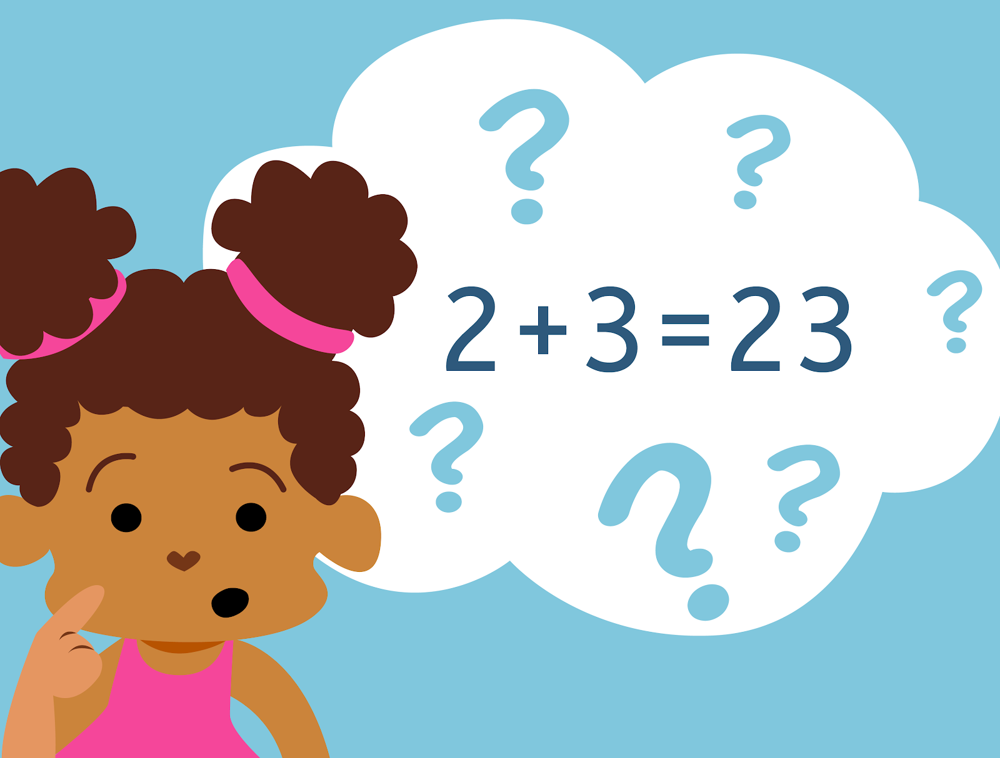

La educación en la actualidad ha comprendido la importancia de la inclusión en
las aulas de clase. Garantizar el derecho a una educación de calidad para los niños
y niñas, es presentar e implementar estrategias que permitan brindar a cada estudiante
la oportunidad de tener lo que necesita para desarrollar sus diferentes estilos
de aprendizaje. Es de gran importancia que el trabajo pedagógico no tenga barreras
con relación a la diversidad de habilidades y destrezas que se pueden encontrar
en los estudiantes. El objetivo principal es que las instituciones brinden esos
espacios de enseñanza aprendizaje donde los pequeños puedan encontrar esa
igualdad, equidad y empatía que debe tener todo ser humano.
Según (Aguilera 2016) la discalculia es una dificultad de
aprendizaje en el calculo, especifica de las matemáticas, y
que se presenta en la etapa escolar. Este trastorno de
aprendizaje esta muy relacionado con la dislexia, ya que
muchos niños con dislexia presentan dificultades en las
matematicas. Este trastorno también supone una incapacidad
para aprender a realizar operaciones aritméticas y genera
confusiones numéricas inusuales.

Caracteristicas
- Problemas asociados a la comprensión del concepto de numero. Tiene problemas a la hora de establecer una relación directa entre el símbolo y el concepto, por ejemplo, no relacionan el "4" con el concepto "cuatro".
- A la hora de escribir confunden números, por ejemplo el numero 9 con el 6, o el 3 con el 8. Invertir la escritura, escriben los símbolos volteados.
- Escritura incorrecta de los numeros al copiarlos o en un dictado, como consecuencia de errores de sonido, por ejemplo, "seis" y "siete" o al confundir el 9 con el 6.
- Dificultad para aprender a contar, cuando lo hacen, lo hacen con los dedos.
- Les cuesta enumerar, ordenar o secuenciar numeros, repite algún numero dos o mas veces.
- Incapacidad para la clasificación y medición.
- Dificultad a la hora de realizar operaciones sencillas como sumas o restas.
Dificultad a la hora de nombrar números, operaciones o enunciados matemáticos.
- DISCALCULIA LÉXICA:
Dificultad para leer símbolos matemáticos.
- DISCALCULIA GRÁFICA:
Dificultad para escribir símbolos matemáticos.
- DISCACULIA OPERACIONAL:
Dificultad para realizar operaciones aritméticas.
- DISCALCULIA PRACTOGNÓSTICA:
Dificultad para enumerar, comparar y manipular objetos matematicos (reales o dibujados).
- DISCALCULIA IDEOGNÓSICA:
Dificultad para comprender conceptos, establecer relaciones y realizar operaciones matemáticas.
link
El rol del docente frente a las situaciones de inclusión
Es común que en las aulas de clase encontremos todo tipo de estudiantes,
con cualidades y habilidades totalmente diferentes. También con niños y
niñas que presentan diferentes dificultades de aprendizaje, todo esto
puede verse difícil de manejar a la hora de incluir tanta diversidad,
pero es el reto del maestro lograr ese espacio donde cada estudiante
logre expresarse tal cual es y además respetar y valorar la diferencia
de los demás. Partiendo de esto, según (Romero, M 2020) en la dificultad
de aprendizaje Discalculia "se debe considerar que el aprendizaje de las
matemáticas y sobre todo en los primeros niveles, se debe hacer desde la practica,
desde el contexto próximo de los alumnos, las cosas mas cercanas y comunes al niño".
.png) ☝️
☝️
.png)
.png)
.png)